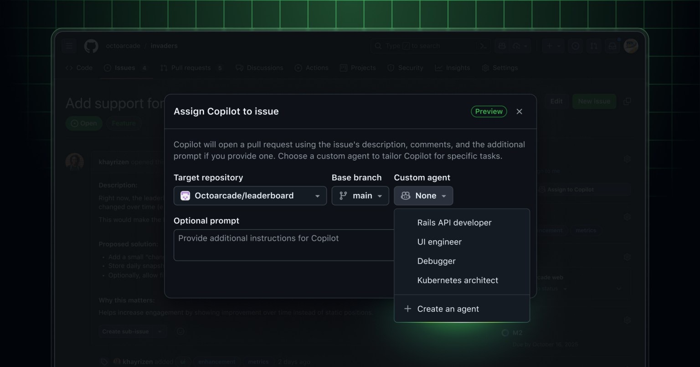
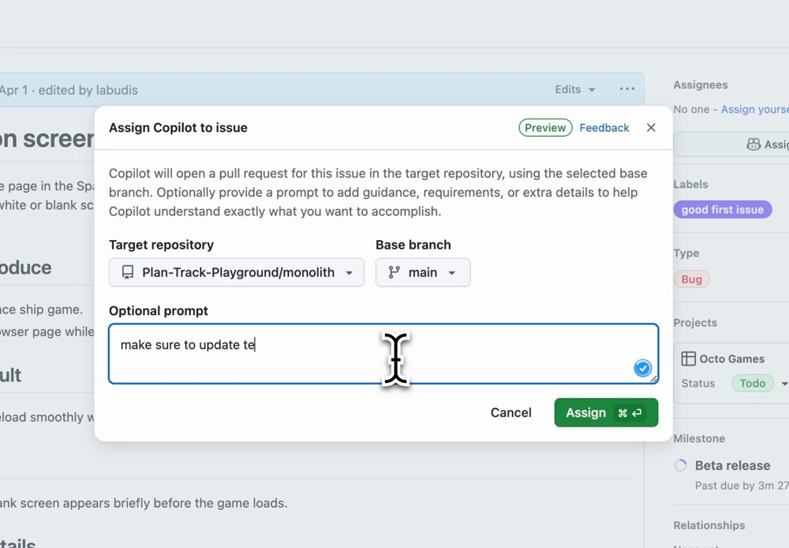
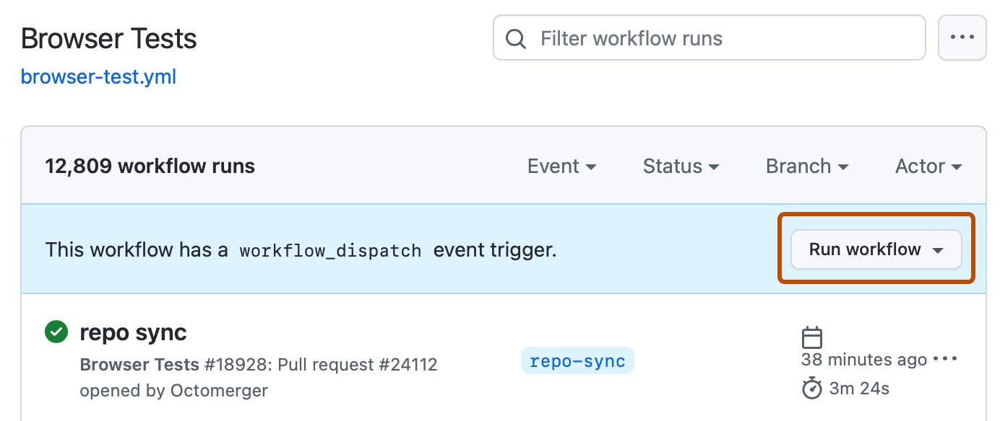
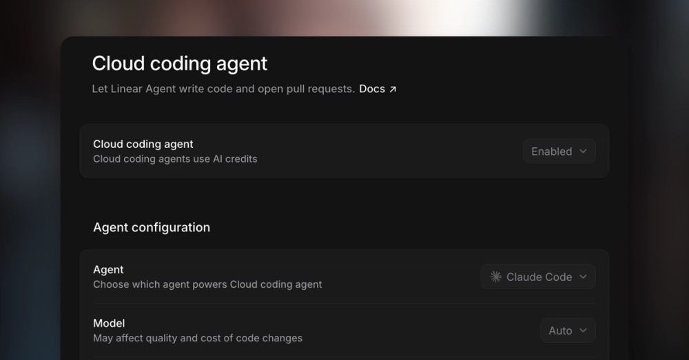
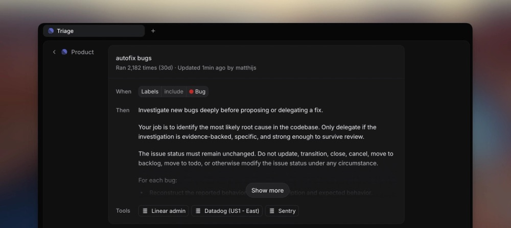
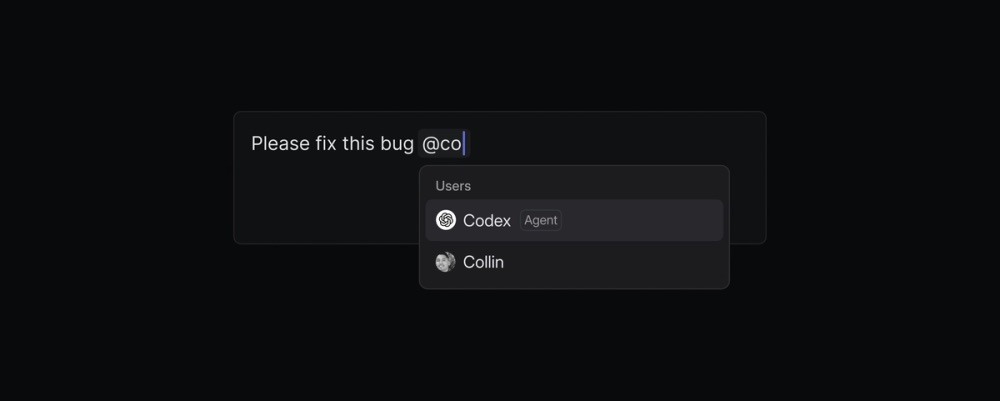
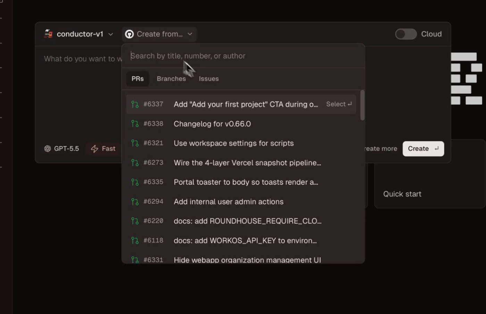

Choosing a flow when you start
Start runs a Task's Graph. Today the Graph is resolved silently: the Task's own, else the Wave's default (feature for Product), else the repository's, else code. These options show five ways to make that choice visible and changeable at the moment of starting.
The flows listed are this repository's real Graphs from lf graph list on November 19, 2026. Graphs carry no descriptions, so each option shows steps and stops. Reference images come from the vendors' changelogs, docs and release videos; I did not use the apps. LOO-434 (open PR #1851) prototypes how a Task moves through delivery once started. The mock rows are real backlog Tasks. These options stop at the moment of starting, and option E is the one that reaches into LOO-434's territory.
What there is to choose
| Flow | Steps (green waits for a person) | Ends |
|---|---|---|
| feature Product's default | explore kickoff concept-review write-docs implement sync realign compress qa concept-review pr-publish human-review reflect gate | Gate passed, not merged |
| code repository fallback | kickoff concept-review write-docs implement sync realign compress qa concept-review pr-publish human-review reflect gate land | lands after your review |
| redesign | design kickoff concept-review write-docs implement … pr-publish | Published PR |
| plan | kickoff concept-review write-docs | A plan, no PR |
| research | research research | Findings, in conversation |
| build | implement sync realign compress qa concept-review pr-publish | never stops for you |
| deep-clean | sync deep-clean qa pr-publish | never stops for you |
| auto · autonomous | kickoff … pr-publish reflect gate land | merges without asking |
Also in the list but not for starting backlog work: incident, task-design, deliver, kickoff-demo, optimize, pursue, queue, finish-queue, refresh, release-run, telemetry-daily, vsm-operate. Four more (local-build-auto, macos-ci-auto, pursue-auto, recover-transient-faults) are listed as unavailable because their files use the retired loop: <step>. A run with no step left that waits for a person approves Auto-Ship, which is why the last three rows are flagged.
How others pick what runs







Pattern: three of the four put the choice in a dropdown with a default, and Linear moves it out of starting altogether, into settings or rules. Only GitHub's custom agents name the choice by role. None shows what will happen after starting: where it will stop, or whether it will merge.
A · Split button: the default is visible, the rest one click away
The toolbar's Start names its flow: Start · feature. The ▾ lists the flows with their stops and whether they merge. Picking one starts it. With several selected, one flow applies to all of them. The row's “···” menu gets a “Start with ›” submenu.
Smallest change: one click when the default is right, two when it isn't. Cost: a note or agent choice has nowhere to go.
B · A start sheet, like Assign to Copilot
Start… opens a small sheet: Flow ▾, Agent ▾ and Start at ▾, then an optional note to the agent and Start ⌘↩. Everything has a default, so Start… then ⌘↩ is still two keys. With several selected, the sheet lists them and one choice applies to all.
Start LOO-458 and LOO-456
The most complete option, and it maps one to one onto lf task run <id> <graph> --from <step> -a <agent>. Cost: a sheet between you and every start.
C · The flow belongs to the Task
A flow is chosen while shaping, not while starting. The opened brief shows Flow: feature (inherited from Product) and can be changed. The toolbar's Move ▾ gains Flow ›, so several can be set at once. Start runs each Task's own flow, so a mixed selection starts mixed flows, and the toolbar says so.
- Flow
- feature ▾ from Product · stops at explore, human-review
The model already has this: a Task's own Graph wins over the Wave's. This option only shows it and lets you set it. It is also the natural target for Linear-style rules later (“bug label → research”). Cost: one more thing on every row; hiding the tag when it equals the default keeps rows quiet.
D · Named for where it stops
The Start menu offers outcomes instead of Graph names, like GitHub's role-named agents. Each entry is a Graph underneath, and its name is shown small. The person picks how involved they want to be.
Reads best for someone who doesn't know the Graph names. Cost: the outcome names have to be written per repository, because a customized Graph can change what “Build, then show me” means. The names drift unless they live in the Graph file.
E · Pick where it stops
Start shows the chosen flow as a strip of steps. You choose where it starts and where it hands back to you, defaulting to the flow's own stops. The flow picker sits at the left of the strip. This option reaches into LOO-434, which owns how a running Task moves through its steps.
The most honest about what Start commits to. Cost: a route editor in the backlog, and an overlap with LOO-434's prototype, which should settle this first.
Questions
- Where is the flow chosen? a · at Start, from a menu (A or D), b · in a start sheet (B), c · on the Task, before starting (C), d · C, with A's menu as an override at Start
- What names the choices? a · Graph names with their stops, b · outcome names (D), c · both
- Does Start also take a note and an agent? a · no, b · yes, in a sheet (B), c · only behind ⌥-Start